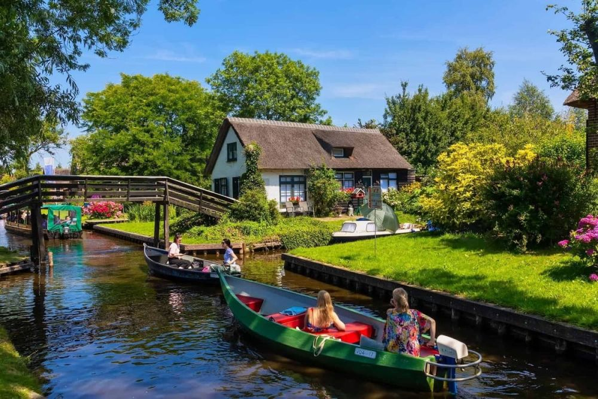

Descoperă Giethoorn - Orașul fără străzi, cunoscut ca „Veneția Nordului”
Giethoorn este un oraș pitoresc din Țările de Jos, faimos pentru canalele sale și arhitectura tradițională:
-

Canale și punți
În loc de străzi, Giethoorn este străbătut de canale și punți pitorești, oferind o atmosferă unică.
-

Plimbări cu bărcile
Vizitatorii pot explora orașul folosind bărci cu motor sau bărci tradiționale numite „puntegieter”.
-

Case cu acoperiș de stuf
Arhitectura tradițională a caselor cu acoperiș de stuf adaugă farmecul specific al orașului.
-

Grădini și natură
Orașul este înconjurat de frumoase grădini și peisaje naturale care pot fi explorate.
-

Muzee și ateliere
Giethoorn oferă muzee și ateliere pentru a învăța mai multe despre istoria și tradițiile locale.
Concluzii
Giethoorn este un loc unic, unde viața se desfășoară pe canale, iar natura și tradițiile își păstrează frumusețea.